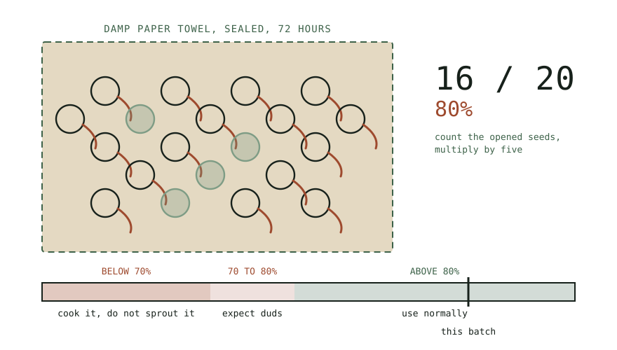

Guide
Buying Sprouting Seed in Bulk
Bulk buying only saves money if the seed is still alive at the bottom of the bag, and viability declines faster than most people expect.
As an Amazon Associate this site earns from qualifying purchases. Links to products may be affiliate links. This costs you nothing extra and does not change what gets recommended. Nothing here is medical advice.
Buying Sprouting Seed in Bulk
Seed is the only recurring cost in sprouting, and the price per kilogram falls sharply with quantity. A five kilogram bag can cost a fraction per portion of what a small pouch does, which makes bulk buying look like an obvious decision.
It is an obvious decision only if you finish the bag while the seed is still alive. Germination rates decline with time, and a bag that outlives its viability is not a bargain. It is a hygiene problem you paid for in advance.

What sprouting grade actually means
The term appears on packaging without a single universal definition behind it, so it is worth understanding what you are actually buying.
At minimum it should mean seed that has been grown, harvested, and stored with human consumption in mind rather than planting. The practical difference is treatment. Garden seed intended for soil is frequently coated with fungicide, which is entirely appropriate for that purpose and entirely inappropriate for something you will eat four days later. The treatment is not always declared prominently.
Beyond that, reputable sprouting suppliers test lots for pathogens and can tell you so. As the hub page explains, contamination in sprouts arrives on the seed far more often than it arrives in your kitchen, which makes the supplier your primary control point rather than a detail.
The useful question to ask a supplier is specific rather than general. Not whether the seed is safe, which every seller will affirm, but whether lots are tested, what they are tested for, and whether results are available. A supplier who answers that clearly is telling you something. A supplier who deflects it is also telling you something.
Viability, and how fast it goes
Germination rate is the percentage of seeds in a lot that will actually sprout. Fresh sprouting seed is typically sold at high rates. That number falls over time, and it falls at very different speeds depending on the seed.
Large dense legumes hold up best. Mung, chickpea, and adzuki stored properly remain usable for several years, with a gradual rather than sudden decline.
Lentils sit in the middle, holding well for a year or two under decent conditions.
Fine brassica and salad seeds decline fastest. Broccoli, radish, alfalfa, and mustard can lose a substantial share of their viability within a year, and a bag that germinated at ninety percent when purchased may be well below that by the following season.
Storage conditions move all of these figures considerably. The same bag in a cool dark cupboard and in a warm kitchen will diverge sharply within months.
Why a low germination rate is a hygiene problem
This is the part that changes the calculation, and it is rarely mentioned.
A seed that fails to germinate does not simply sit there inertly. It sits in a warm, wet, dark jar for four days alongside seeds that are actively germinating, and it is dead organic matter in exactly the conditions that spoilage organisms prefer.
A batch with five percent duds is unaffected. A batch with forty percent duds has a substantial mass of decomposing material distributed through it, which is why old seed produces batches that smell wrong even when the technique is unchanged.
The symptom people report is that sprouting suddenly stopped working. The cause is usually a bag bought eighteen months ago.
What the labels do and do not tell you
Sprouting seed carries a range of certifications and descriptors, and they answer different questions. It is worth knowing which question each one actually answers.
Organic describes how the crop was grown: which inputs were permitted in the field. It is a meaningful production standard and it is not a pathogen guarantee. Contamination in sprouting seed frequently arrives from environmental sources such as water or wildlife in the growing area, and those routes are open to organic and conventional crops alike. Organic seed is a reasonable preference and a poor substitute for asking about testing.
Untreated means no fungicide or other seed treatment has been applied. This is the descriptor that actually matters when distinguishing sprouting seed from garden seed, and it is the one people most often overlook in favour of the more familiar organic label.
Non GMO speaks to genetics rather than to safety or performance, and for the crops in this category it rarely distinguishes one supplier from another.
Tested for pathogens is the claim that addresses the risk this whole page is about, and it is the least standardised of the four. There is no single scheme behind the phrase, so the useful follow up is what was tested, how often, and at what stage: seed lot, or finished sprouts, or both.
Germination rate is sometimes printed with a test date. When it is, that date is more useful than the percentage, because it tells you where in the decline curve the bag currently sits.
None of these labels is a substitute for the others, and a bag can carry three of them while telling you nothing about the fourth. Read them as separate answers to separate questions rather than as a general quality score.
Storage
Three things degrade seed: heat, moisture, and light. Heat is the worst of them.
The cupboard above the stove is the single worst storage location in a typical kitchen and one of the most commonly used. Every cooking session heats it. Move seed to the coolest cupboard available, away from the hob and out of direct sun.
Store in opaque airtight containers rather than the original bag once it has been opened. A resealed paper or plastic bag admits both moisture and air. Glass jars with sealing lids work well and have the advantage that you can label them clearly.
Refrigeration extends viability for fine seeds meaningfully and introduces one risk: condensation every time a cold container is opened in a warm kitchen. If you refrigerate, decant into small containers so the main stock is opened rarely, and let a container reach room temperature before opening it.
Freezing works for long term storage of properly dried seed and is more effort than most household quantities justify.
Splitting a large order
The tension in this whole page is that unit price falls with quantity while viability sets a ceiling on how much you should hold. Splitting an order resolves it.
Two or three households buying a large bag together each end up with a manageable quantity at the bulk price. This works particularly well for fine seeds like broccoli and alfalfa, where the viability window is short and the per kilogram saving is largest.
Decant into separate opaque airtight containers at the point of splitting rather than later, and write the same lot number and purchase date on every container. A split order that loses its lot number has traded a small saving for the inability to act on a recall.
The germination test
Twenty seeds, one damp paper towel, one plastic bag, seventy two hours. This is the whole procedure and it settles the question definitively.
Count out exactly twenty seeds. Fold them into a damp, not wet, paper towel. Seal in a bag at room temperature, out of direct light. Check at seventy two hours and count how many have opened and shown a root.
Multiply by five for a percentage. Sixteen sprouted is eighty percent.
Above eighty percent, use the seed normally. Between seventy and eighty, use it and expect a slightly higher dud rate. Below seventy, use it for cooking rather than sprouting and buy fresh. The seed is perfectly good food. It is simply no longer good seed.
Run this test on anything older than a year, on any bag whose history you do not know, and before committing to a large quantity from an unfamiliar supplier. It costs twenty seeds and three days.
Lot numbers and recalls
Write the lot number and purchase date on the storage container, and keep it there until the bag is finished.
This costs nothing and is the only thing that makes a recall notice actionable. Sprouting seed recalls do happen, and they are announced by lot. Without the number, a recall notice is information you cannot act on, and you are left deciding whether to discard a full bag on the basis of a guess.
The same applies to the batch itself. A piece of tape on the jar with the date and lot takes five seconds and closes the loop.
RUN THE NUMBERS
Illustrative ranges only. Prices vary widely by region and supplier, and none of this predicts what you will pay.
| Purchase size | Cost per portion | Realistic shelf life | Sensible for |
|---|---|---|---|
| Small pouch | Highest | Finished quickly | Trying a new seed |
| Half kilogram | Lower | Comfortable for most | A weekly habit, fine seed |
| One to two kilograms | Lower still | Fine for legumes | A weekly habit, beans |
| Five kilograms or more | Lowest | Often outlives viability | Households eating sprouts daily |
The honest calculation is not price per kilogram. It is price per kilogram actually eaten. A five kilogram bag of broccoli seed at a very low unit price is expensive if you discard the last two kilograms.
Work backwards. Estimate your realistic weekly consumption, multiply by fifty two, and buy no more than a year of fine seed or two years of legumes.
WHAT GOES WRONG
Sudden failures after months of success. Old seed. Run the germination test before changing anything else.
Batches that smell wrong despite good technique. Dud seed decomposing in the jar. Same cause, same test.
Fungicide treated seed bought by accident. Garden seed rather than sprouting seed. Check the packet and the supplier, and discard rather than risk it.
A bag that went off in storage. Heat, usually the cupboard above the stove. Moisture, occasionally, from a resealed bag.
A recall you cannot act on. No lot number recorded. Write it on the container the day you open it.
DO THIS NOW
- Find your oldest bag of sprouting seed and run a twenty seed germination test today.
- Move all seed out of any cupboard near the hob and into the coolest one you have.
- Decant opened bags into opaque airtight containers and write the lot number and purchase date on each.
- Before your next bulk purchase, estimate a year of realistic consumption and buy no more than that for fine seed.
Next
For the seed where sourcing matters most, and where fungicide treated garden stock is easiest to buy by mistake, see broccoli sprouts and what the research actually says.
For the seed where a whole category sold in every supermarket will never germinate regardless of how fresh it is, see lentils and the red lentil trap.